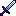
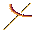
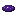
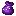
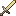

Minecraft Plus
por Oliver
El mod universal: añade de todo a Minecraft, desde el End y el espacio hasta tecnología, armas, comida, gatos y desafíos.
- End Update: Cristal del Vacío, armadura y herramientas del Vacío
- Space Update: cohetes, traje espacial y planetas (Luna, Marte, Venus, Saturno…)
- Update 3: armas, tecnología, Lord Ender y GOD
- Mega Expansión: 5 reinos, dimensiones de bolsillo, Wither Storm, consola con robot, frutas, pepinillos, lentes, pociones, desafíos y logros





⬇ Descargar
mcplus-0.6.1.jar · 1,6 MB